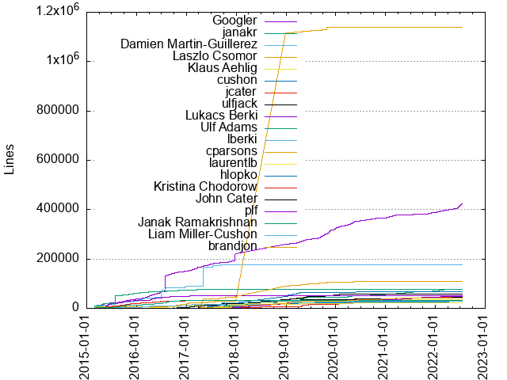
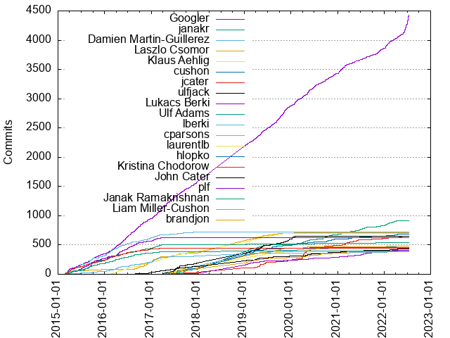

Authors
| Author | Commits (%) | + lines | - lines | First commit | Last commit | Age | Active days | # by commits |
|---|
| Googler | 4430 (13.39%) | 423433 | 223085 | 2015-02-09 | 2022-07-13 | 2711 days, 9:37:14 | 1678 | 1 |
| janakr | 909 (2.75%) | 77027 | 46712 | 2017-03-28 | 2022-04-05 | 1834 days, 0:20:20 | 510 | 2 |
| Damien Martin-Guillerez | 717 (2.17%) | 175299 | 47646 | 2015-02-09 | 2017-12-14 | 1039 days, 1:50:01 | 323 | 3 |
| Laszlo Csomor | 704 (2.13%) | 1138467 | 796070 | 2015-02-06 | 2020-01-28 | 1816 days, 15:35:26 | 407 | 4 |
| Klaus Aehlig | 701 (2.12%) | 35150 | 10480 | 2016-02-24 | 2020-01-20 | 1425 days, 18:23:42 | 434 | 5 |
| cushon | 691 (2.09%) | 28415 | 26582 | 2017-04-03 | 2022-05-23 | 1876 days, 1:10:56 | 425 | 6 |
| jcater | 646 (1.95%) | 45613 | 31752 | 2017-03-30 | 2022-05-20 | 1876 days, 18:21:57 | 307 | 7 |
| ulfjack | 645 (1.95%) | 56279 | 38674 | 2017-03-29 | 2020-01-30 | 1036 days, 22:58:02 | 294 | 8 |
| Lukacs Berki | 622 (1.88%) | 50880 | 28974 | 2015-02-12 | 2017-03-20 | 767 days, 0:32:43 | 304 | 9 |
| Ulf Adams | 536 (1.62%) | 77727 | 19757 | 2015-02-06 | 2021-10-28 | 2456 days, 0:32:44 | 255 | 10 |
| lberki | 484 (1.46%) | 30167 | 45418 | 2017-04-13 | 2022-05-24 | 1867 days, 6:53:29 | 302 | 11 |
| cparsons | 476 (1.44%) | 108218 | 46696 | 2017-04-05 | 2022-01-18 | 1749 days, 2:32:18 | 286 | 12 |
| laurentlb | 456 (1.38%) | 23227 | 27980 | 2017-03-30 | 2022-03-24 | 1819 days, 19:06:57 | 264 | 13 |
| hlopko | 456 (1.38%) | 66079 | 60671 | 2017-03-29 | 2022-02-09 | 1778 days, 0:55:57 | 271 | 14 |
| Kristina Chodorow | 444 (1.34%) | 32432 | 21226 | 2015-02-06 | 2017-03-16 | 769 days, 1:26:56 | 241 | 15 |
| John Cater | 433 (1.31%) | 43809 | 18402 | 2016-06-21 | 2022-05-26 | 2165 days, 2:04:26 | 314 | 16 |
| plf | 410 (1.24%) | 47386 | 31940 | 2017-05-03 | 2022-04-06 | 1799 days, 5:59:45 | 287 | 17 |
| Janak Ramakrishnan | 396 (1.20%) | 32639 | 21616 | 2015-02-06 | 2020-03-31 | 1880 days, 2:59:30 | 250 | 18 |
| Liam Miller-Cushon | 392 (1.18%) | 28934 | 46160 | 2015-02-06 | 2022-04-28 | 2637 days, 12:34:31 | 272 | 19 |
| brandjon | 390 (1.18%) | 40905 | 18917 | 2017-03-31 | 2022-05-10 | 1865 days, 21:43:47 | 260 | 20 |
These didn't make it to the top: Yun Peng, gregce, Philipp Wollermann, Laurent Le Brun, adonovan, jhorvitz, nharmata, ilist, Dmitry Lomov, michajlo, philwo, twerth, tomlu, Nathan Harmata, pcloudy, juliexxia, ajurkowski, mschaller, Greg Estren, ajmichael, Benjamin Peterson, jmmv, jingwen, Cal Peyser, cpeyser, felly, Han-Wen Nienhuys, ccalvarin, Jakob Buchgraber, Chris Parsons, leba, Carmi Grushko, kmb, Bazel Release System, Florian Weikert, Michajlo Matijkiw, shahan, buchgr, Adam Michael, iirina, larsrc, rosica, elenairina, waltl, laszlocsomor, Tobias Werth, David Chen, corysmith, Keith Smiley, Jingwen Chen, Alex Humesky, djasper, dchai, Mark Schaller, Eric Fellheimer, wyv, steinman, vladmos, dannark, Yue Gan, Dmitry Shevchenko, asteinb, mstaib, dslomov, Rumou Duan, shreyax, Ivo List, Marcel Hlopko, ahumesky, adgar, olaola, Jon Brandvein, Francois-Rene Rideau, arostovtsev, Peter Schmitt, Andrew Pellegrini, Thiago Farina, Chi Wang, mjhalupka, aiuto, lpino, ruperts, cmita, Michael Staib, fwe, Dave MacLachlan, kaipi, dbabkin, Irina Iancu, Daniel Wagner-Hall, schmitt, fzaiser, dmarting, cnsun, Yannic Bonenberger, Sergio Campama, allevato, dacek, ichern, Loo Rong Jie, Luis Fernando Pino Duque, Brian Silverman, hvd, dmaclach, Vladimir Moskva, aehlig, Sasha Smundak, twigg, Manuel Klimek, George Gensure, carmi, emilyguo, Julio Merino, Ola Rozenfeld, László Csomor, messa, Fabian Meumertzheim, Stiopa Koltsov, Miguel Alcon Pinto, sgjesse, bcsf, kush, cpovirk, Tony Aiuto, Lukacs T. Berki, spomorski, chiwang, kchodorow, John Millikin, ishikhman, Peter Mounce, Kush Chakraborty, tanzhengwei, David Ostrovsky, ranjanih, Taras Tsugrii, Marwan Tammam, Michael Thvedt, Erik Kuefler, Charles Mita, xingao, wilwell, kendalllane, Philipp Schrader, Klaas Boesche, John Field, Marian Lobur, Shreya Bhattarai, steren, brendandouglas, Xin Gao, Ryan Beasley, Ed Schouten, Akira Baruah, kkress, mai93, blossomsm, Irina, Benjamin Lee, trybka, philomath, daroberts, Matthew DeVore, Dmitry Ivankov, Kurt Alfred Kluever, Justine Tunney, David Santiago, Dan Fabulich, apell, Yannic, Thi Doan, Pedro Liberal Fernandez, Chloe Calvarin, Alpha Lam, yileiyang, eaftan, Mostyn Bramley-Moore, Greg, Ed Baunton, thomasvl, kotlaja, gnish, bbaren, aldersondrive, Steren, Grzegorz Lukasik, Erik Abair, David Z. Chen, Dave Lee, Dave Abrahams, Danna Kelmer, Benjamin Staffin, Andrzej Guszak, Androbin, warkahscott, haxorz, Vladimir Chebotarev, Kamil Jiwa, Austin Schuh, Andreas Bergmeier, Alessandro Patti, seancurran, mmikitka, dzc, diamondm, Vasilios Pantazopoulos, Samuel Giddins, Piotr Sikora, Jin, Eric Dobson, Chris Povirk, Alexandre Rostovtsev, zshmeis, karlgray, hvadehra, davg, Todd Jeffreys, Tim van der Lippe, Tiago Quelhas, Steven Dee, Oscar Bonilla, Ming Zhao, Michael Zhou, Kevin Bierhoff, Kamal Marhubi, Gregor Jasny, Fredrik Medley, Elena-Irina Iancu, Donald Chai, Brentley Jones, Andrew Suffield, Anastasios Kakalis, Alex Eagle, yiyu, tjgq, rduan, katre, jfield, jasonobrien, dmishe, Zhongpeng Lin, Xavier Bonaventura, Tom de Goede, Steren Giannini, Stephen Twigg, Niyas Sait, Mike Morearty, Matt Mackay, Lauri Peltonen, L?szl? Csomor, Justin Horvitz, Joe Finney, Cristian Hancila, Colin Cross, Cody Schroeder, Christopher Sauer, Chengnian Sun, Bor Kae Hwang, Ben Lee, wtroberts, tedx, michelleirvine, mai12, ehaugh, andy g scott ?, ThomasCJY, Tetsuo Kiso, Siddhartha Bagaria, Shahan Yang, Serge, Ross Light, Rodrigo Queiro, Peter Foley, Nick Korostelev, Mike Lewis, Michael Hackner, Kalle Johansson, John Sullivan, John Laxson, Janak, Jacob Parker, Ivan Vucica, Ittai Zeidman, Eric Cousineau, Emil Kattainen, Eddie Aftandilian, Clint Harrison, Benedek Thaler, Artem Zinnatullin, Arielle Albon, Andreas Herrmann, Adam Liddell, wjywbs, sxlijin, klimek, jart, glukasiknuro, fweikert, erenon, davidstanke, dapengzhang0, ckennelly, Yuval, Yuki Yugui Sonoda, Xdng Yng, Ulrik Falklof, Travis Cline, Torgil Svensson, Thi Don, Thi, Stepan Koltsov, Shmuel H, Rupert Shuttleworth, Robert Gay, Robert Brown, Patrick Balestra, Passw, Oscar Boykin, Nikolay Shelukhin, Nicolas Lopez, Max Vorobev, Marc Plano-Lesay, Lszl Csomor, Kevin Gessner, Jonathan Bluett-Duncan, Joe Le-Ba, Jason Gavris, Jake Voytko, Jaewoong Jung, Igal Tabachnik, Hugues Evrard, Derek Perez, Denys Kurylenko, David Pursehouse, Dan Fleming, Christy Norman, Christopher Peterson Sauer, Chaoren Lin, Carl Mastrangelo, Andy Scott, Andrew Z Allen, Andrew Katson, tomrenn, spishak, scentini, ronshapiro, ron-stripe, rmalik, nikola-sh, nicolov, nicoaragon, neerajen, mpn, liuhuahang, jacobsa, ibiryukov, corysmith@google.com, bcutler, Yuval K, Yesudeep Mangalapilly, Yen-Chi Chen, Xudong Yang, Warren Turkal, Vertexwahn, Tyler Rockwood, Trustin Lee, Tomas Lundell, Timothy Klim, Timothe Peignier, Tim Peut, Thomas Zayouna, Thomas Broyer, Takeo Sawada, Stephan Wolski, Steeve Morin, Son Luong Ngoc, Simon Stewart, Simon Horlick, Simon Bjorklen, Siggi Simonarson, Seth Greenstein, Sam Guymer, Saleem Abdulrasool, Ruixin Bao, Rohit Saboo, Robin Nabel, Richard Xia, Richard Levasseur, Rgis Dcamps, Pras Velagapudi, Petros Eskinder, Paul Cody Johnston, Patrick Niklaus, Pascal Muetschard, Or Shachar, Olek Wojnar, Oleg Tsarev, Noa Resare, Nathan Herring, Misha Brukman, Mike Fourie, Michael Shields, Michael Eisel, Menny Even Danan, MarkusTeufelberger, Marc Zych, Liangliang He, Lee Mracek, Kseniia Vasilchuk, Kevin Hogeland, Keith Moyer, Keith Cartledge, Kai Xu, Justin Santa Barbara, Justin Buchanan, Julie Xia, Jonathan Springer, Joe Lencioni, Jingwen, Jeff Lavallee, Jeff Hodges, Jeff Grafton, Jasper Siepkes, Jan, Irina Chernushina, Ira Shikhman, Ikko Ashimine, Harsh Vardhan, Harmandeep Kaur, Hadrien Chauvin, Gunther Noack, Gregg Donovan, Gibson Fahnestock, George Kalpakas, George Chiramel, Elliotte Rusty Harold, Eduardo Colaco, Doug Rabson, Dmitry Petrashko, Dionna Glaze, David Neil, David Mankin, David Herman, David Flemström, Danny Wolf, Dan Halperin, Christian Edward Gruber, Chris Rebert, Chris Heisterkamp, Brian, Brandon Jacklyn, Benjamin Romano, Austin Anderson, Asaf Flescher, Andrew Jorgensen, Andreas Hippler, Ali Ijaz Sheikh, Alexander Ilyin, Alexander Grund, Alexander Chung, Alex Vandiver, Alex Kirchhoff, Alex Jurkowski, Adam, yoav-steinberg, wylazy, wisechengyi, vectoralpha, utsav-dbx, treuherz, timm-gs, tatiana, szakmary, sventiffe, susinmotion, stiffe, steve-the-bayesian, steple, skainswo, silvergasp, sheu, sergey, schroederc, samuela, samhowes, rustberry, robinnabel, richardwa, rachcatch, petros, perwestling, panzhongxian, oscar, oquenchil, odisseus, natans, namrata-ibm, microjixl, mgeisler, menny, matloob, martinboehme, marcohu, m, liubang, lihu, kekxv, kabakaev, justhecuke, juanchoviedo, jsharpe, johnjbarton, joeleba, jmtatsch, jheaff1, jgehw, ivucica, ittaiz, is03wlei, ilovezfs, homuler, hollste, hannometer, goodspark, gkorlam, gkgoat1, garyschulte, frazze-jobb, floriographygoth, flamecoals, fangism, ecngtng, dorranh, dlr, divanorama, dhananjayn, dgreiman, davideleoni90, dannysullivan, crydell-ericsson, clyang82, ckiffel, ccross, calpeyser, bttk, bromano, bnczk, asmundak, arunkumar9t2, arun.sampathkumar, aolivas, andrewpaekgoogle, aman, a7g4, [zqzzq], Zhong Wang, Zhexuan Yang, Zheng Wei Tan, Zhaoqing Xu, Zaven Muradyan, Zain Asgar, Zackary Lowery, Zack Lalanne, Zach Pomerantz, Yves Junqueira, Yuval Kaplan, Yuta Saito, Yury Evtikhov, Yunchi Luo, Yuchen Dai, Yuannan Cai, Yu Yi, Yilei Yang, Yilei (Dolee) Yang, Yihong Wang, Yi Cheng, XindaH, Xiaoyi Shi, Wren Turkal, William Muir, William Entriken, William Chargin, William A Rowe Jr, Wenyu Zhang, Wayou Liu, Walt Panfil, Volker Braun, Vo Van Nghia, Vladimir Zaytsev, Vladimir Tagakov, Vladimir Rutsky, Vladimir Pouzanov, Vlad Losev, Vega Paithankar, Vaidas Pilkauskas, V Vn Ngha, Uri Baghin, Umesh Yadav, U-GOOGLE\pcloudy, Tyler True, Ty Book, Trevor Summers Smith, Travis Clarke, Topher, Tony Liang, Tony Hsu, Tony Allevato, Tomasz Strejczek, Tomas Volf, Tom Prince, Tom Payne, Tom Hennigan, Tobi, Tim Zaman, Tim Neumann, Thomas Köppe, Thomas Chen, Thomas Carmet, Thaler Benedek, Ted Kaplan, Taymon A. Beal, Tao Wang, Takuto Ikuta, Takeshi Hagikura, Svilen Kanev, Sven Tiffe, Suvanjan Mukherjee, Steven Parkes, Steven Johnson, Steve Vermeulen, Steve Siano, Stephen Amar, Stein Eldar Johnsen, Stefan Sauer, Stanimir Mladenov, Solal Pirelli, Snow Pettersen, Shlomi Shemesh, Shinichiro Hamaji, Shin Yamamoto, Shimin Guo, Shay Weiss, Shachar Anchelovich, Sevki Hasirci, Sergio Rodriguez Orellana, Sergey Tyurin, Sergey Balabanov, Sebastian Olsson, Scott Robertson, Samuel Husso, Samer Masterson, Sam Rawlins, Salty Egg, Sahin Yort, Régis Décamps, Ryota, Ryan Schmidt, Ryan Pavlik, Russ Cox, Rui Chen, Rubens Farias, Ruben Das, Roller, David, Roland Huß, Rohan Joyce, Robert Sayre, Robbert Van Ginkel, Rishabh Chakrabarti, Rifqi Mulya Fahmi, Ricky Pai, Ricardo Delfin, Renaud Paquay, Reker, Ray Loyzaga, Rasmus Lund, Raphael Badin, Rai, Rahul Malik, Rahul Butani, Rabi Shanker Guha, Qais Patankar, Pweaver (Paul Weaver), Pranjal Agrawal, Phoenix Meadowlark, Philipp Stephani, Philip Patsch, Phil Bordelon, Peter Laird, Peter Kasting, Peter, Per Halvor Tryggeseth, Pedro Kiefer, Pedro Alvarez, Pawe? Zuzelski, Paul Tarjan, Paul Roberts, Paul Gschwendtner, Paul Gross, Paul Draper, Paul Bethe, Patrick Donelan, Pascal Terjan, Onath Claridge, Omar Zuniga, Olle Lundberg, Olivier Chafik, Oleh Stolyar, Oleg Ponomarev, Noah Misch, Nitesh Anandan, Nishidha Panpaliya, Nikolaus Wittenstein, Nikhita Raghunath, Nikhil Marathe, Niek Peeters, Nick Glorioso, NicholasGorski, Nicholas Lativy, Nelson Elhage, Neil, Neeraj Gupta, Nathaniel Brough, Nate Bosch, Naresh, Mouad Benchchaoui, Moritz Krger, Misha Seltzer, Mikhail Mazurskiy, Mikhail Balabin, Michal Rydlo, Michal Majcherski, Michael Stapelberg, Michael P. Nitowski, Michael McLoughlin, Michael Krasnyk, Michael Klemm, Michael Chinen, Michael Beardsworth, Meng Zhang, Max Liu, Mauricio Galindo, Matt Passell, Matt Mukerjee, Matt Davis, Matt Clarkson, Mathieu Olivari, Mathieu Boespflug, Masoud Koleini, Martin Probst, Markus Lachinger, Mark Zeren, Mark Nevill, Mark Karpov, Mark Butcher, Marin Baron, Marek uppa, Marcin Maliszkiewicz, Mantas Sakalauskas, Mansheng Yang, Mai Hussien, Lukasz Tekieli, Luis Pino, Luc Bertrand, Liu Liu, Linuxer Wang, Links, Li-Wen Hsu, Leo, Kyle Teske, Kyle Moffett, Kyle Lippincott, Krishna Ersson, Kiril Videlov, Kevin Watts, Kevin Lubick, Kevin Lin, Kerrick Staley, Ken Micklas, Kelsey Z, Kelly Campbell, Keith Stanger, Keefer Taylor, Kaiqin Chen, Justus Tumacder, Justin Y Wei, Julie, Jov, Josh Smith, Josh Rosen, Josh Pieper, Josh Goldberg, Josh Enders, Joseph Park, Jonathon Belotti, Jonathan Schear, Jonathan Perry, Jonathan Gerrish, Jonathan Cohen, Jonathan Beverly, Jon Stewart, John Shimek, John Maguire, John Basila, Johannes Abt, Joel Williamson, Joe Harrison, Jiri Dank, Jie Yu, Jiawen Chen, Jesse Chan, Jerry Marino, Jeremy Wall, Jeremy Nimmer, Jeremy Apthorp, Jeff Palm, Jay Vercellone, Jay Bazuzi, Javier Dehesa, Jason Young, Jason Tan, Jason Lunz, Jason Hoch, Jason Furmanek, Jared Neil, Jannis Andrija Schnitzer, Jan Voung, Jamie Snape, Jamie, James deBoer, James Wright, James Judd, Jakub Bujny, Ivan Vučica, Ivan Boci?, Ity Kaul, Ilya Biryukov, Ian McGinnis, Ian Cottrell, Iain Merrick, Iain McGinniss, Hui-Zhi, Holger Freyther, Henk van der Laan, Helen Altshuler, Hannes Kufler, Halil Sener, Gustavo Storti Salibi, Gustav Westling, Gustav Larsson, Gursewak, Guro Bokum, Gunnar Wagenknecht, Guillaume Bouchard, Gregory Clark, Greg Steuck, Graham Jenson, GinFungYJF, Gert van Dijk, Gerhard Pretorius, George Prekas, Geoffrey Martin-Noble, Geoff Maddox, Gautam Korlam, Garrett Hopper, Garrett Holmstrom, Gabriel Staples, Finn Ball, Felix Ehrenpfort, Fedor Korotkov, Farhim Ferdous, Fan Wu, Fabian Brandstetter, FaBrand, Evan Martin, Ethan Steinberg, Ethan Rublee, Erik Gilling, Eric Wendelin, Eric Paniagua, Eric Klein, Eran Shalom, Emran BatmanGhelich, Emmanuel Jay, Emmanuel Goh, Eitan Adler, Drew Gassaway, Douglas Parker, Douglas Dawson, Doug Greiman, Donald Duo Zhao, Dmitry Komanov, Dmitry Frenkel, Dmitri G, Dino Wernli, Dimi Shahbaz, Dillon Cower, Derek Lawless, Derek Argueta, Delwin9999, David Stanke, David Newgas, David McNett, David Jarvis, David Haxton, David Cummings, David, Dave hughes, Dave Rolsky, Dave Nicponski, Dave Dopson, Darius, Daniel Trebbien, Daniel McCarney, Daniel Martn, Dan Bamikiya, Colin Marc, Claudio Bley, Christopher Parsons, Christoph Siedentop, Christian Verkerk, Chris Fredrickson, Chris Eason, Chris Clearwater, Chris Beach, Chongyu Zhu, Changming Sun, Chad Miller, Carlos Eduardo Seo, Cameron Mulhern, Brian Topping, Brian Richardson, Branton Horsley, Brandon Lico, Brandon Duffany, Bradley Burns, Bohdan Vanieiev, Bin Lu, Bernhard M. Wiedemann, Benson Muite, Ben Diuguid, Ben Creech, Beebs, Auke Schrijnen, Attila Olh, Attila Ol?h, Ast-x64, Asim Shankar, Artur Dryomov, Artem V. Navrotskiy, Artem Pelenitsyn, Arshabh Kumar Agarwal, Arek Sredzki, Ara Nguyen, April Schleck, Antonio Cortes Perez, Antoine Eiche, Anthony Pratti, Anthony Bellissimo, Andy Reitz, Andrew Klotz, Andrew Johnson, Andrew Allen, Andreas Fuchs, Anders Sundman (asum), Alpha, Alois Klink, Allen Porter, Allen Lavoie, Alex Torok, Alex Thompson, Alex Scott, Alex Ryan, Alex Gaynor, Alex Beggs, Alex, Albert Lloveras, Alan, Adam Wolf, Adam Price, Adam Gross, Adam Azarchs, Abhishek Kumar, ????, ??
Only top 20 authors shown
Only top 20 authors shown
| Month | Author | Commits (%) | Next top 5 | Number of authors |
|---|
| 2022-07 | Googler | 149 (85.63% of 174) | Kurt Alfred Kluever, Yannic Bonenberger, Fabian Meumertzheim, rustberry, fweikert | 16 |
| 2022-06 | Googler | 165 (83.33% of 198) | Kurt Alfred Kluever, Benjamin Peterson, Bazel Release System, hvadehra, Fabian Meumertzheim | 19 |
| 2022-05 | Googler | 44 (20.28% of 217) | leba, ilist, jcater, ajurkowski, wyv | 60 |
| 2022-04 | Googler | 45 (16.19% of 278) | ilist, jhorvitz, trybka, cushon, leba | 73 |
| 2022-03 | Googler | 43 (16.17% of 266) | emilyguo, janakr, fwe, nharmata, cushon | 70 |
| 2022-02 | Googler | 51 (18.35% of 278) | janakr, plf, fwe, John Cater, michajlo | 60 |
| 2022-01 | Googler | 75 (25.42% of 295) | ilist, janakr, larsrc, jhorvitz, cushon | 60 |
| 2021-12 | Googler | 36 (17.91% of 201) | jhorvitz, ilist, nharmata, janakr, ajurkowski | 52 |
| 2021-11 | Googler | 56 (22.05% of 254) | ilist, jhorvitz, dacek, janakr, hvd | 58 |
| 2021-10 | jhorvitz | 35 (16.06% of 218) | Googler, ajurkowski, pcloudy, Benjamin Peterson, twerth | 59 |
| 2021-09 | Googler | 25 (9.65% of 259) | ilist, wyv, jhorvitz, dacek, pcloudy | 60 |
| 2021-08 | Googler | 29 (13.12% of 221) | jhorvitz, janakr, ilist, plf, michajlo | 50 |
| 2021-07 | Googler | 27 (10.11% of 267) | wyv, janakr, jhorvitz, plf, ilist | 54 |
| 2021-06 | jhorvitz | 33 (12.00% of 275) | janakr, ajurkowski, Googler, jcater, michajlo | 57 |
| 2021-05 | Googler | 27 (13.43% of 201) | ilist, jcater, jhorvitz, allevato, ajurkowski | 51 |
| 2021-04 | waltl | 28 (9.76% of 287) | Googler, ilist, jhorvitz, janakr, larsrc | 67 |
| 2021-03 | Googler | 38 (12.18% of 312) | jcater, janakr, ilist, jhorvitz, ajurkowski | 65 |
| 2021-02 | Googler | 53 (20.78% of 255) | jhorvitz, jcater, brandjon, ilist, waltl | 71 |
| 2021-01 | Googler | 67 (23.34% of 287) | djasper, Ivo List, adonovan, janakr, plf | 68 |
| 2020-12 | Googler | 39 (16.74% of 233) | Ivo List, cushon, Stiopa Koltsov, adonovan, twerth | 61 |
| 2020-11 | Googler | 34 (10.90% of 312) | adonovan, Ivo List, janakr, larsrc, Stiopa Koltsov | 65 |
| 2020-10 | Googler | 39 (11.40% of 342) | adonovan, janakr, cushon, Dmitry Ivankov, Keith Smiley | 75 |
| 2020-09 | adonovan | 48 (13.75% of 349) | Googler, janakr, jcater, michajlo, jhorvitz | 78 |
| 2020-08 | Googler | 34 (12.27% of 277) | jcater, adonovan, brandjon, larsrc, janakr | 72 |
| 2020-07 | Googler | 47 (16.26% of 289) | jhorvitz, adonovan, michajlo, laurentlb, leba | 66 |
| 2020-06 | Googler | 49 (18.01% of 272) | mschaller, jcater, adonovan, gregce, plf | 63 |
| 2020-05 | Googler | 75 (16.30% of 460) | mschaller, janakr, Yun Peng, adonovan, gregce | 80 |
| 2020-04 | jcater | 105 (22.29% of 471) | Googler, adonovan, janakr, twerth, gregce | 71 |
| 2020-03 | Googler | 45 (14.85% of 303) | michajlo, jcater, janakr, lberki, jmmv | 61 |
| 2020-02 | Googler | 58 (16.52% of 351) | janakr, ichern, philwo, cushon, adonovan | 72 |
| 2020-01 | Googler | 50 (12.82% of 390) | ulfjack, philwo, adonovan, twerth, schmitt | 66 |
| 2019-12 | Googler | 45 (16.92% of 266) | ulfjack, adonovan, jcater, dchai, felly | 58 |
| 2019-11 | Googler | 86 (26.38% of 326) | ulfjack, laurentlb, ichern, Jingwen Chen, leba | 62 |
| 2019-10 | Googler | 83 (24.70% of 336) | cparsons, jmmv, ulfjack, dchai, cushon | 69 |
| 2019-09 | Googler | 75 (25.86% of 290) | dchai, bcsf, jmmv, cparsons, ulfjack | 71 |
| 2019-08 | Googler | 51 (12.35% of 413) | cushon, lberki, cparsons, Klaus Aehlig, dchai | 73 |
| 2019-07 | Googler | 41 (11.85% of 346) | Klaus Aehlig, ulfjack, lberki, Marwan Tammam, Laszlo Csomor | 72 |
| 2019-06 | Googler | 44 (13.62% of 323) | jcater, michajlo, philwo, laurentlb, rosica | 61 |
| 2019-05 | Googler | 68 (13.99% of 486) | ulfjack, jcater, iirina, janakr, juliexxia | 84 |
| 2019-04 | Googler | 58 (11.31% of 513) | jcater, Laszlo Csomor, Klaus Aehlig, John Cater, iirina | 74 |
| 2019-03 | Googler | 50 (10.46% of 478) | hlopko, rosica, ulfjack, djasper, janakr | 73 |
| 2019-02 | Googler | 38 (8.64% of 440) | cushon, ulfjack, iirina, janakr, Klaus Aehlig | 71 |
| 2019-01 | Googler | 47 (9.51% of 494) | cushon, janakr, plf, hlopko, brandjon | 73 |
| 2018-12 | Googler | 34 (12.88% of 264) | hlopko, brandjon, lberki, jingwen, Tobias Werth | 60 |
| 2018-11 | Googler | 55 (11.70% of 470) | ulfjack, lberki, cushon, laurentlb, Laszlo Csomor | 68 |
| 2018-10 | Googler | 70 (15.28% of 458) | laurentlb, cushon, janakr, lberki, hlopko | 75 |
| 2018-09 | Googler | 40 (10.15% of 394) | hlopko, cushon, Laszlo Csomor, laurentlb, plf | 73 |
| 2018-08 | Googler | 88 (16.92% of 520) | corysmith, cushon, Laszlo Csomor, tomlu, twerth | 86 |
| 2018-07 | Googler | 77 (16.04% of 480) | cushon, buchgr, ulfjack, twerth, Laszlo Csomor | 80 |
| 2018-06 | Googler | 40 (7.98% of 501) | ulfjack, cparsons, janakr, plf, dannark | 78 |
| 2018-05 | asteinb | 50 (10.80% of 463) | Googler, cparsons, hlopko, ulfjack, janakr | 76 |
| 2018-04 | Googler | 46 (8.78% of 524) | cushon, tomlu, asteinb, shahan, janakr | 64 |
| 2018-03 | janakr | 74 (13.48% of 549) | Googler, hlopko, cparsons, nharmata, brandjon | 86 |
| 2018-02 | janakr | 51 (9.34% of 546) | Googler, cpeyser, mjhalupka, Klaus Aehlig, tomlu | 75 |
| 2018-01 | tomlu | 37 (8.49% of 436) | Googler, shahan, Laszlo Csomor, cushon, janakr | 72 |
| 2017-12 | Googler | 42 (10.50% of 400) | tomlu, ajmichael, laurentlb, ruperts, cushon | 80 |
| 2017-11 | Googler | 47 (12.18% of 386) | cpeyser, cushon, tomlu, laurentlb, cparsons | 95 |
| 2017-10 | Googler | 31 (7.60% of 408) | lberki, fzaiser, tomlu, janakr, ccalvarin | 75 |
| 2017-09 | Googler | 41 (8.54% of 480) | cpeyser, hlopko, ccalvarin, ajmichael, dmarting | 82 |
| 2017-08 | Googler | 56 (10.49% of 534) | tomlu, ulfjack, ajmichael, hlopko, brandjon | 85 |
| 2017-07 | ulfjack | 54 (9.66% of 559) | Googler, lberki, dslomov, laurentlb, vladmos | 79 |
| 2017-06 | Googler | 56 (12.90% of 434) | ulfjack, laurentlb, Klaus Aehlig, lberki, Yun Peng | 73 |
| 2017-05 | Googler | 61 (14.32% of 426) | ajmichael, lberki, Klaus Aehlig, Philipp Wollermann, philwo | 74 |
| 2017-04 | Googler | 42 (9.88% of 425) | cushon, ajmichael, philwo, ulfjack, Klaus Aehlig | 76 |
| 2017-03 | Googler | 97 (18.73% of 518) | Philipp Wollermann, Laszlo Csomor, Klaus Aehlig, Adam Michael, Ulf Adams | 85 |
| 2017-02 | Googler | 58 (12.26% of 473) | Liam Miller-Cushon, Carmi Grushko, Ulf Adams, Laurent Le Brun, Laszlo Csomor | 55 |
| 2017-01 | Googler | 55 (11.43% of 481) | Laszlo Csomor, Liam Miller-Cushon, Lukacs Berki, Marcel Hlopko, Ulf Adams | 57 |
| 2016-12 | Googler | 38 (11.14% of 341) | Laszlo Csomor, Damien Martin-Guillerez, Adam Michael, Greg Estren, Marcel Hlopko | 62 |
| 2016-11 | Laszlo Csomor | 37 (8.79% of 421) | Klaus Aehlig, Googler, Carmi Grushko, Dmitry Lomov, Adam Michael | 60 |
| 2016-10 | Googler | 51 (13.75% of 371) | Ulf Adams, Damien Martin-Guillerez, Philipp Wollermann, Klaus Aehlig, Adam Michael | 59 |
| 2016-09 | Googler | 62 (13.39% of 463) | Laszlo Csomor, Lukacs Berki, Cal Peyser, Klaus Aehlig, Yun Peng | 54 |
| 2016-08 | Googler | 54 (13.24% of 408) | Lukacs Berki, Sasha Smundak, Janak Ramakrishnan, Cal Peyser, Ulf Adams | 65 |
| 2016-07 | Googler | 56 (14.29% of 392) | Lukacs Berki, Yun Peng, Liam Miller-Cushon, Damien Martin-Guillerez, Carmi Grushko | 55 |
| 2016-06 | Googler | 77 (16.56% of 465) | Lukacs Berki, Klaus Aehlig, Damien Martin-Guillerez, Yun Peng, Dmitry Lomov | 44 |
| 2016-05 | Googler | 60 (17.49% of 343) | Lukacs Berki, Kristina Chodorow, Damien Martin-Guillerez, Janak Ramakrishnan, Dmitry Shevchenko | 45 |
| 2016-04 | Lukacs Berki | 59 (13.95% of 423) | Googler, Damien Martin-Guillerez, Klaus Aehlig, Liam Miller-Cushon, Ulf Adams | 50 |
| 2016-03 | Googler | 62 (17.22% of 360) | Damien Martin-Guillerez, Janak Ramakrishnan, Klaus Aehlig, Liam Miller-Cushon, Ulf Adams | 47 |
| 2016-02 | Damien Martin-Guillerez | 48 (11.06% of 434) | Dmitry Lomov, Googler, Ulf Adams, Liam Miller-Cushon, Kristina Chodorow | 57 |
| 2016-01 | Damien Martin-Guillerez | 45 (13.72% of 328) | Kristina Chodorow, Googler, Lukacs Berki, Janak Ramakrishnan, Ulf Adams | 51 |
| 2015-12 | Florian Weikert | 27 (11.64% of 232) | Damien Martin-Guillerez, Ulf Adams, Googler, Lukacs Berki, Kristina Chodorow | 41 |
| 2015-11 | Googler | 33 (9.19% of 359) | Florian Weikert, Dmitry Lomov, Mark Schaller, Damien Martin-Guillerez, Carmi Grushko | 46 |
| 2015-10 | Lukacs Berki | 33 (8.19% of 403) | Googler, Han-Wen Nienhuys, Ulf Adams, Nathan Harmata, Kristina Chodorow | 46 |
| 2015-09 | Ulf Adams | 74 (14.18% of 522) | Damien Martin-Guillerez, Googler, Lukacs Berki, Laurent Le Brun, Philipp Wollermann | 43 |
| 2015-08 | Ulf Adams | 33 (9.12% of 362) | Janak Ramakrishnan, Googler, Florian Weikert, Lukacs Berki, Kristina Chodorow | 43 |
| 2015-07 | Lukacs Berki | 42 (14.48% of 290) | Googler, Damien Martin-Guillerez, Ulf Adams, Kristina Chodorow, Florian Weikert | 42 |
| 2015-06 | Lukacs Berki | 39 (10.92% of 357) | Damien Martin-Guillerez, Googler, Laurent Le Brun, Philipp Wollermann, Kristina Chodorow | 38 |
| 2015-05 | Laurent Le Brun | 36 (13.90% of 259) | Damien Martin-Guillerez, Googler, Kristina Chodorow, Thiago Farina, Alex Humesky | 33 |
| 2015-04 | Kristina Chodorow | 46 (14.42% of 319) | Ulf Adams, Laurent Le Brun, Googler, Janak Ramakrishnan, Damien Martin-Guillerez | 34 |
| 2015-03 | Googler | 66 (15.14% of 436) | Laurent Le Brun, Damien Martin-Guillerez, Laszlo Csomor, Kristina Chodorow, Daniel Wagner-Hall | 27 |
| 2015-02 | Han-Wen Nienhuys | 21 (12.96% of 162) | Googler, Lukacs Berki, Ulf Adams, Damien Martin-Guillerez, Manuel Klimek | 24 |
| Year | Author | Commits (%) | Next top 5 | Number of authors |
|---|
| 2022 | Googler | 572 (33.53% of 1706) | ilist, janakr, emilyguo, leba, cushon | 182 |
| 2021 | Googler | 424 (13.96% of 3037) | jhorvitz, ilist, janakr, jcater, ajurkowski | 227 |
| 2020 | Googler | 560 (13.83% of 4049) | adonovan, jcater, janakr, gregce, mschaller | 273 |
| 2019 | Googler | 686 (14.56% of 4711) | ulfjack, Klaus Aehlig, cushon, jcater, iirina | 237 |
| 2018 | Googler | 611 (10.90% of 5605) | janakr, cushon, hlopko, cparsons, Laszlo Csomor | 243 |
| 2017 | Googler | 631 (11.42% of 5524) | ulfjack, Klaus Aehlig, ajmichael, Laszlo Csomor, lberki | 261 |
| 2016 | Googler | 597 (12.57% of 4749) | Damien Martin-Guillerez, Lukacs Berki, Klaus Aehlig, Ulf Adams, Kristina Chodorow | 164 |
| 2015 | Googler | 349 (9.43% of 3701) | Damien Martin-Guillerez, Lukacs Berki, Ulf Adams, Kristina Chodorow, Laurent Le Brun | 107 |
| Domains | Total (%) |
|---|
| google.com | 30890 (93.37%) |
|---|
| gmail.com | 876 (2.65%) |
|---|
| benjamin.pe | 125 (0.38%) |
|---|
| users.noreply.github.com | 122 (0.37%) |
|---|
| chromium.org | 75 (0.23%) |
|---|
| engflow.com | 67 (0.20%) |
|---|
| yannic-bonenberger.com | 61 (0.18%) |
|---|
| uber.com | 55 (0.17%) |
|---|
| meumertzhe.im | 37 (0.11%) |
|---|
| apple.com | 30 (0.09%) |
|---|